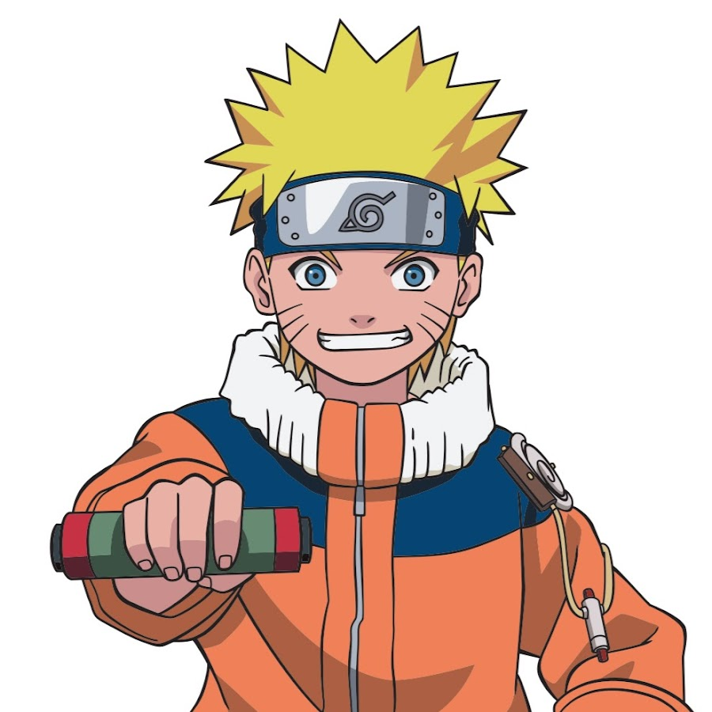

Naruto
| Nom du manga | Volumes | Description du volume | Année publication |
|---|---|---|---|
| Le Ninja qui rêve de devenir Hokage | Vol. 1 | Tanjiro rejoint les Pourfendeurs | 2000 |
| L’Équipe 7 | Vol. 2 | Introduction de Zenitsu et Inosuke | 2000 |
| L’Examen des Chûnin | Vol. 3 | Combat contre les Démons Araignées | 2001 |
| Les premiers pas vers le rêve | Vol. 4 | Réhabilitation physique au domaine des Papillons | 2001 |
Informations détaillées sur Naruto
Naruto est un manga et anime japonais populaire créé par Masashi Kishimoto. L’histoire suit Naruto Uzumaki, un jeune ninja qui rêve de devenir le Hokage, le chef de son village, afin d’être reconnu et protégé. Cependant, Naruto est rejeté par de nombreux villageois car il est l’hôte du Démon Renard à Neuf Queues (Kurama), une créature puissante qui a autrefois attaqué le Village Caché de Konoha.
Le Synopsis
Dans le Village Caché de Konoha, un jeune ninja nommé Naruto Uzumaki rêve de devenir Hokage, le chef et protecteur du village. Cependant, Naruto est rejeté par la plupart des habitants, car il porte en lui un puissant démon, le Renard à Neuf Queues (Kurama), scellé en lui à sa naissance. Déterminé à prouver sa valeur, Naruto intègre l’Académie Ninja et est placé dans l’Équipe 7, aux côtés de Sasuke Uchiha, un prodige en quête de vengeance, et Sakura Haruno, dont il est secrètement amoureux. Leur maître, Kakashi Hatake, un ninja expérimenté, leur enseigne l’importance du travail d’équipe et les guide dans leurs premières missions. Au fil de son voyage, Naruto découvre la véritable signification de l’amitié, de la trahison et du sacrifice. Il affronte de puissants ennemis, notamment l’Akatsuki, une organisation criminelle cherchant à capturer les démons à queues, et tente de ramener Sasuke, qui s’est éloigné du village pour obtenir plus de pouvoir.
Les personnages principaux
- Naruto Uzumaki : Devenir Hokage et être reconnu par tous
- Sasuke Uchiha : Se venger de son frère Itachi Uchiha, puis rétablir l'honneur de son clan
- Sakura Haruno : Devenir une kunoichi forte et protéger ses amis
- Kakashi Hatake : Guider la nouvelle génération de ninjas
- Jiraiya : Entraîner Naruto et découvrir les secrets de l’Akatsuki
- Itachi Uchiha : Révéler la vérité à Sasuke et protéger Konoha dans l’ombre